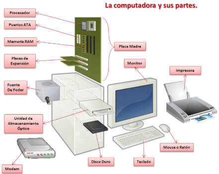

Arquitectura de maquinas - Contenido y material del curso
Que es un microprocesador?
Un microprocesador es un circuido integrado que contiene la unidad central de procesamiento(CPU) de un sistema informatico. Es el cerebro de un dispositivo electronico, encargado de ejecutar instrucciones y realizar operaciones logicas aritmeticas. Su aparicion revoluciono el mundo de la informatica y permitio la creacion de computadoras personales y dispositivos inteligentes.
El microprocesador ejecuta instrucciones almacenadas en la memoria mediante un ciclo llamado ciclo de instruccion, que consta de tres fases:
Fetch(busqueda): recupera la instruccion de la memoria
Decode(decodificacion): Interpreta la instruccion
Execute(ejecucion): Realiza la operacion(calculo, movimiento de datos, decision,etc.)
Ademas, el microprocesador trabaja en conjunto con otros componentes como:
Memoria RAM: Almacena datos temporales.
Unidad de control: Coordina operaciones internas.
ALU: La unidad aritmetica-logica ejecuta operaciones matematicas y logicas.
Registros: Almacenamiento rapido dentro del procesador.
Hoy en dia, los microprocesadores estan en casi todos los dispositivos electronicos. Desde computadoras y telefonos hasta
en automoviles, relojes, electrodomesticos etc. Son esenciales para la computacion moderna y su evolucion ha permitido avances en inteligencia
artificial, medicina, videojuegos y muchas otras areas
Gracias a los
microprocesadores, es posible automatizar tareas repetitivas, realizar calculos en tiempo real y controlar procesos completos en fabricas, laboratorios, hospitales y mas. Son esenciales para muchos sistemas de control como:
Robotica
Control de trafico aereo
Manufactura industrial automatizada
Agricultura de precision
La arquitectura de computadoras se refiere al diseno conceptual y la estructura operativa fundamental de un sistema de computo. Define como debe comportarse el hardware desde el punto de vista del programador, incluyendo el conjunto de instrucciones, modos de direccionamiento, formatos de datos y tipos de registros.
Elementos principales:
Conjunto de instrucciones (ISA): Lenguaje de maquina que el procesador entiende.
Modos de direccionamiento: Como se accede a la memoria y a los operandos.
Registros: Pequenas unidades de almacenamiento dentro del procesador (acumulador, contador de programa, etc.).
Tipo de datos y operaciones soportadas: Enteros, punto flotante, operaciones aritmeticas/logicas.
El sistema de entradas y salidas (E/S) es una parte esencial de la arquitectura de computadoras, ya que permite la comunicacion entre la computadora y el mundo exterior.
A traves de este subsistema, los datos pueden entrar al sistema (entrada) o salir hacia dispositivos externos (salida). Los dispositivos de E/S pueden ser teclados, ratones, pantallas,
impresoras, discos duros, memorias USB, sensores, camaras, entre muchos otros.
Desde el punto de vista tecnico, las operaciones de E/S se gestionan por medio de instrucciones especiales que permiten al procesador enviar o recibir datos desde un puerto o direccion especifica. En arquitecturas modernas, estas operaciones se integran con el bus del sistema y pueden realizarse mediante mapeo de memoria
(los dispositivos se tratan como posiciones de memoria) o por medio de puertos de E/S dedicados.
Existen tres metodos principales para manejar la E/S:
E/S programada:El procesador controla directamente al dispositivo, preguntando constantemente si esta listo para enviar o recibir datos.
Es simple, pero poco eficiente, porque el procesador se mantiene ocupado.
E/S con interrupciones: El dispositivo interrumpe al procesador cuando esta listo para comunicarse. Esto mejora el rendimiento, ya que el procesador puede seguir trabajando hasta que el dispositivo lo necesite.
DMA (Acceso Directo a Memoria): El dispositivo transfiere datos directamente a la memoria sin pasar por el procesador. Esto es mucho mas eficiente para grandes volumenes de datos,
como copiar un archivo desde un disco duro a la RAM.
El sistema de E/S tambien debe encargarse de traducir las senales fisicas (como las del teclado o la camara) en datos digitales que el procesador pueda entender. Para esto se utilizan controladores de dispositivos (drivers) y se gestionan prioridades,
velocidades y compatibilidades.
La memoria en una computadora es el componente encargado de almacenar datos e instrucciones de forma temporal o permanente, permitiendo al procesador acceder rapidamente a la informacion necesaria para ejecutar programas.
Tipos de memoria
1.Memoria principal (RAM- Memoria de acceso aleatorio):
Es una memoria volatil, lo que significa que pierde su contenido al apagar la computadora. Se utiliza para almacenar los programas que se estan ejecutando y los datos que esos programas necesitan en tiempo real.
2.Memoria ROM(Memoria de solo lectura):
Contiene informacion que no cambia, como el firmware del sistema. Es no volatil, lo que significa que conserva los datos incluso sin energia.
3.Cache:
Es una memoria mucho mas rapida que la RAM, pero mucho mas pequena. Se encuentra dentro o cerca del procesador y almacena datos e instrucciones que se usan con frecuencia para acelerar el acceso.
5.Registros
Son memorias extremadamente rapidas dentro del procesador. Se usan para operaciones inmediatas, como almacenar temporalmente numeros durante una operacion matematica.
Que es el procesamiento?
El procesamiento es la etapa en la que la computadora
ejecuta instrucciones y realiza operaciones usando los datos almacenados en memoria. Esta tarea es realizada
principalmente
por el procesador o CPU (Unidad Central de Procesamiento).
Funciones del procesador
El procesador es como el "cerebro" de la computadora. Sus funciones principales son:
1.
Buscar (fetch): Traer una instruccion desde la memoria.
2.Decodificar (decode): Interpretar la instruccion para saber que hacer.
3.Ejecutar (execute): Realizar la operacion (sumar, mover datos, comparar, etc.).
4.Almacenar (store): Guardar el resultado de la operacion en memoria si es necesario.
Este ciclo se repite millones o incluso miles de millones de veces por segundo.
Componentes basicos:
Unidad de control (CU): Dirige el flujo de datos, dice que instruccion se ejecuta y como.
Unidad aritmetico-logica (ALU):Realiza operaciones matematicas y logicas.
Registros:Pequenas memorias internas que almacenan datos temporales.
Bus de datos y control:Canales por donde viajan las instrucciones y datos hacia y desde el procesador.